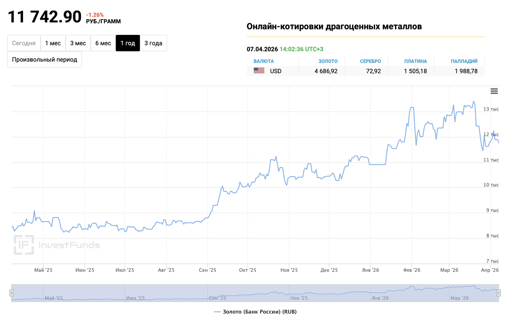
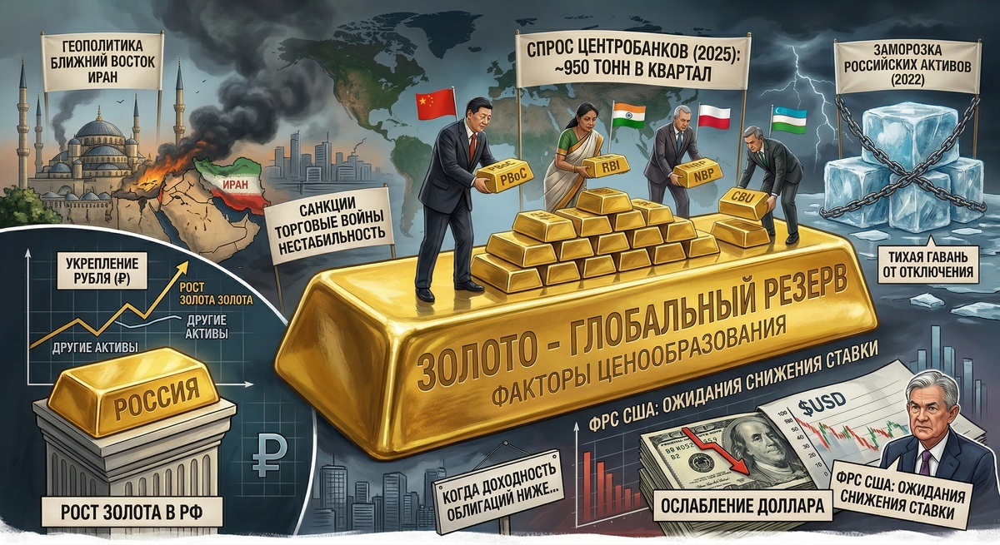
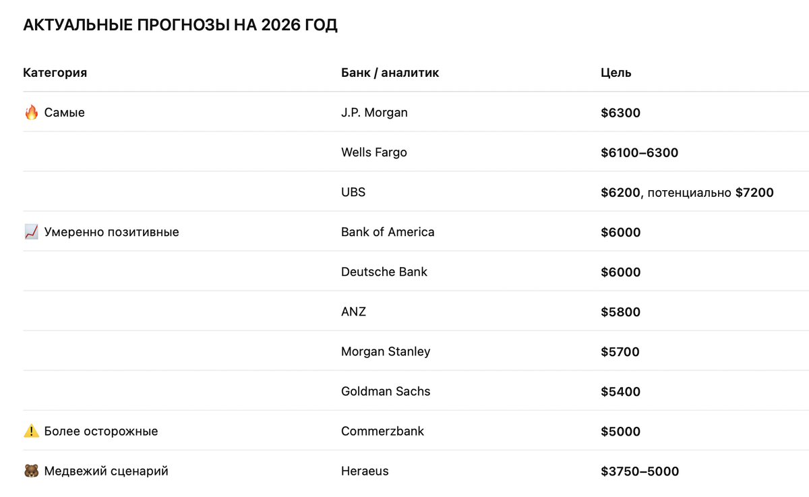

Золото: всё или ещё покупаем?
Золото установило исторический рекорд по стоимости, а большинство инвесторов до сих пор смотрят на него и думают: «Ну и что мне с этим делать? Поздно уже? Или ещё можно?»
Я вижу это постоянно. Человек приходит с портфелем, в котором есть акции, облигации, а золота нет. Или есть, но случайно: купил когда-то, потому что все говорили, а зачем оно там — непонятно.
Давайте разберёмся честно. Не с позиции «золото — это круто» или «золото — это пузырь». А с позиции: нужно ли оно именно вам, и если да, то что с ним делать прямо сейчас.
Что произошло с золотом за последний год
Цифры впечатляют. В 2025 золото показало лучший результат с 1979 года — рост около 65% в долларах. В октябре цена впервые в истории перевалила за $4000 за унцию, в январе 2026 — за $5000, а исторический максимум в конце января был около $5590–5600.

Почему так произошло? Несколько причин сошлись одновременно. Центробанки по всему миру скупают золото: по данным J.P. Morgan, в 2025 спрос центробанков и инвесторов в среднем составлял около 950 тонн в квартал. Китай, Индия, Польша, Узбекистан наращивают резервы — после заморозки российских активов в 2022 многие решили держать то, что нельзя «отключить».
Добавьте геополитику — Ближний Восток, Иран, торговые войны, санкции — всё это толкает инвесторов в тихую гавань. Плюс ослабление доллара и ожидания снижения ставки ФРС. В России рост скромнее, потому что рубль укрепился, но даже так золото обогнало большинство активов.

Сейчас, в апреле 2026-го, золото скорректировалось до $4650–4700. После такого ралли это нормально: инвесторы фиксируют прибыль, рынок переваривает рост.
Что говорят аналитики — и почему не стоит слепо им верить
Прогнозы на 2026 разбросаны так широко, что хочется спросить: вы вообще про одно золото говорите?

Разброс такой, потому что никто не знает, что будет с геополитикой, политикой ФРС и долларом, а золото очень чувствительно к этим факторам. Моя позиция простая: прогнозы — это ориентир, а не руководство к действию. Я не принимаю решения по портфелю на основании того, что сказал Goldman Sachs. И вам не советую. Решения нужно принимать на основании вашей стратегии и вашей цели.
Зачем вообще золото в портфеле
Большинство думают о золоте неправильно. Золото — это не про «заработать побольше». Это защитный актив. Его задача — не расти быстрее всех, а держаться, когда всё остальное падает.
Классическая рекомендация — держать 5–10% портфеля в золоте. Не 50%, не всё в золоте. Именно небольшая доля, которая работает как страховка.
Но если в портфеле нет системы, золото эту дыру не закроет. Без понимания риск-профиля и правил стратегии оно станет ещё одной случайной покупкой в куче других. Сначала система. Потом золото как часть этой системы.
Как купить золото в России
Хорошая новость: вариантов много, и порог входа низкий.
- БПИФ на золото — самый простой способ. Биржевые фонды, которые следуют за ценой золота; пай от 10–15 ₽, покупается в любом брокерском приложении, комиссия 0,5–1,5% в год. Примеры: SBGD, TGLD, GOLD, AKGD.
- ОМС (обезличенный металлический счёт) — «как вклад, но в золоте». На счёте числится золото в граммах, можно продать в любой момент. НДС нет; держите больше трёх лет — налог на прибыль тоже не платите.
- Слитки и монеты — для тех, кому важно держать в руках. С 2022 НДС на слитки отменён, но придётся думать о хранении.
- Акции золотодобытчиков (Полюс, Селигдар, ЮГК) — это уже не про золото, а про бизнес компаний: свои риски — долги, операционные проблемы, дивполитика.
Про налоги: держите золото в любой форме больше трёх лет — налог на прибыль не нужен. Меньше — НДФЛ 13%. Есть имущественный вычет: продали меньше чем на 250 тыс ₽ за год — налог тоже не платите.
Покупать сейчас или ждать?
Честный ответ — зависит от того, зачем вам золото.
Если это защитная доля (страховка на 5–10%) — входить можно и сейчас, необязательно сразу на всю сумму. Разбейте на несколько покупок: часть сейчас, часть через месяц, часть через два — усредните цену и не будете гадать про момент.
Если вы думаете о золоте как о спекуляции («куплю, пока не улетело») — подумайте дважды. После роста на 65% за год коррекция нормальна, может быть и −10%, и −20%. Не готовы — это не ваш инструмент.
Коррекция — это не катастрофа. Это возможность для тех, кто понимает свою стратегию. И проблема для тех, кто покупал на эмоциях.
Что в итоге
Золото — это не волшебная таблетка и не секретный актив, который сделает вас богатым. Это инструмент. Часть системы. Защита от того, что рынки иногда делают странные вещи.
Если у вас есть система — золото займёт в ней своё место. Если системы нет — сначала постройте её. Потому что портфель — это не набор покупок, это логика. А золото без логики — просто ещё одна строчка в приложении, на которую вы смотрите и не понимаете, что с ней делать.
Хотите увидеть всю картину, а не один кусочек?
Про золото и другие тренды 2026 я подробно разбираю на занятиях Академии — какие стратегии работают сейчас и будут работать дальше.
Занять место →Не является индивидуальной инвестиционной рекомендацией. Доходности прошлых периодов не гарантируют будущих. 16+